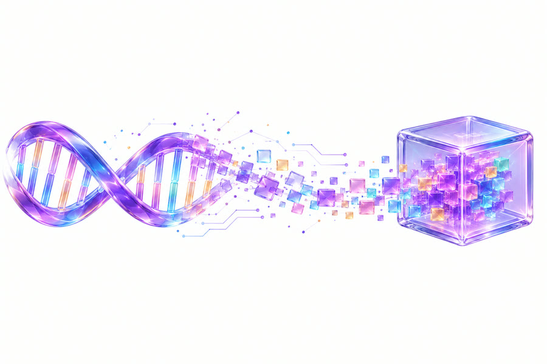

Built at NEAR HACKATHON · open source
An AI reads your DNA, your watch and your blood test inside sealed hardware.
Your raw DNA file, your watch export and your blood test are read on this page and never uploaded. Only a handful of trait genotypes, four weekly averages and where each blood value falls leave it, encrypted to a key that this page first checks is held inside a confidential-computing chip. The reply comes back encrypted to this page and signed by that key. It is a wellness reading: your genome says what tends to be, your watch and your blood test what is happening now.
-
1
Choose a genome
The samples are made-up people (synthetic files in the 23andMe and AncestryDNA formats).
23andMe, AncestryDNA, MyHeritage, FamilyTreeDNA or Living DNA (.txt, .csv or .zip). Read on this device only.This public demo reads the samples only. To read your own file, run the app on your own computer (two commands, in the README).
-
2
Add four weeks of watch data
Sleep, resting heart rate, heart rate variability and steps, one row a day. The sample people come with made-up watch data. Only four weekly averages per measure leave this page, encrypted.
CSV or JSON with date, sleep_hours, resting_hr, hrv_ms and steps, one row a day. Read on this device only. -
3
Add a blood test
Each value with its unit and the range its lab printed. The sample people come with a made-up blood test. The page only says where each value falls in its lab's range; it never says what a value means.
CSV or JSON with marker, value, unit, low and high, as the lab printed them. Read on this device only. -
4
What leaves this page
These lines are all that is sent, and they are encrypted first. The rest of your files stays here. Each result and note below is worked out on this page from a fixed table; the AI only writes it up.
-
5
Check the sealed hardware
This page asks NEAR AI Cloud for a fresh hardware report, with a random number only this page knows, and checks it before trusting the model's key.
-
6
Pay with any coin
-

6Your reading
How it works
- 1Proof first. Before anything is sent, your browser checks a fresh hardware report bound to its own random number: Intel's signature, NVIDIA's verdict, the model's key.
- 2Sealed on the way. The six genotypes, the watch averages and the blood test values are encrypted to that key. The relay and the gateway carry them without being able to read them.
- 3Signed on the way back. The reading returns encrypted to your browser and signed inside the TEE, for exactly this request.
In words
- Your files stay here. The page reads your files in your browser and keeps only the eight variants in the panel, four weekly averages per watch measure and the blood test values with their ranges. Its security policy lets it talk only to its own server, plus NVIDIA's public key list.
- The hardware is checked first. NEAR AI Cloud runs the model inside an Intel TDX confidential VM with NVIDIA GPUs in confidential mode. The page asks for a report bound to a random number it just made, and checks the report: Intel's signature, the model key and the number inside it, the exact software the hardware measured, and NVIDIA's signed verdict.
- Encrypted to that key. The panel, the watch averages and the blood test are encrypted (X25519, XChaCha20-Poly1305, NEAR AI's E2EE version 3) to the key the hardware vouched for. Our server and NEAR's gateway pass on ciphertext they cannot read.
- Signed reply. The model encrypts its reply to a key this page made for this visit, and signs a hash of the exact request and reply. The page checks that signature against the attested key.
- Nothing is kept. Our server stores no request or reply. Close the tab and the keys are gone.
What this does not prove
- It trusts Intel and NVIDIA: their chips and their signing keys.
- The report shows which container images run, by digest. Whether that software keeps no logs is a claim you can check against NEAR AI's published source, not something the hardware proves.
- The genotypes, averages and values do reach the model inside the TEE: that is how it can read them.
- The watch numbers are the watch's own estimates, and a blood test's ranges are its lab's. This page checks neither.
- This is a wellness reading of a few traits, your own watch trends and where your blood values fall. It is not medical advice and says nothing about disease.